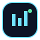

SYSTEM STATUS / 01
PENDINGChecking service…
The dashboard is checking the live analytics API and recovery options.
Worker APINot checked
Analytics dataWaiting for data
GitHub archiveUse Health Check
TelegramUse Health Check

One command center for traffic, devices, platforms and event history — with automatic recovery when the live API has a bad day.
The dashboard is checking the live analytics API and recovery options.
Connect a site in four small steps, no backend of your own required.
platformIdanalytics.js snippetEvents flowing through the selected time window
Select a platform to inspect it
Choose a row to inspect the collected event snapshot.
| Time | Event / Platform | IP | Location | Device | Browser / OS | Page |
|---|---|---|---|---|---|---|
Loading event stream… | ||||||
These detailed rankings reuse the current dataset. Event-type, source and status cards reflect the recent event stream when the Worker does not return a dedicated aggregate.
Copy a starter request pointed at the configured Worker URL. No admin token is embedded.